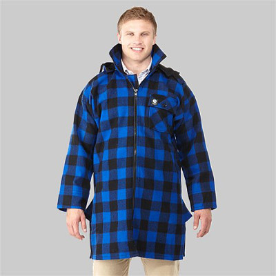

私のお気に入り
釣りの衣類 スワンドライのウールハット
いつの年の冬だったか、名古屋へ出かける時にこの帽子をかぶって名鉄電車に乗ったら、隣に座った人に、
「良い帽子ですねぇ！」
と声を掛けられたことがあった。お気に入りの、自慢の帽子だったので、嬉しくなって御礼を述べて、それからその人と話が弾んだ。もう10年以上前に、ニュージーランドはクライストチャーチのカンタベリー博物館の売店で買ったこと、製造元のスワンドライのサイトからは、通信販売で日本からも買えること、などなど。その人には、スワンドライの綴りもメモしてあげて、金山の駅で別れた。


今年、2017年の1月に、茅ヶ崎にある開高健記念館を訪れた時にも、朝一番で入館すると、女性スタッフの人がこの帽子を見るなり、
「開高さんのかぶってらしたような帽子ですね」
と嬉しい言葉を掛けて下さった。
この帽子の柄は、正確にはバッファロープレイドと言い、もともとはスコットランドのタータンチェックのバリエーションの一つである。それがネイティブアメリカンとの交易を通じて北米大陸に伝わり、アメリカでは非常にポピュラーな柄である。有名な所では、ウールリッチというメーカーのウールシャツがある。
僕の帽子はニュージーランドのスワンドライ製であるが、やはりこのメーカーも100年以上の歴史があり、バッファロープレイドのウールジャケットは、ニュージーランドの農場主のユニフォームとも言えるほどポピュラーであり、冬場の雨の日などは皆申し合わせたようにこのジャケットを着て牧場の作業にいそしんでいるのである。

この帽子の良い所は、ニュージーランド産のウールで丈夫に出来ており、とても暖かいこと。少々の雨ならはじいてしまうこと。よく目立つ色で、シビアなブラウントラウトの釣りには向かないが、人との待ち合わせではとても役立つことなどが挙げられる。僕はどうしたものか、この赤と黒のバッファロープレイドが無性に好きで、よく目立つし暖かい色合いだし、冬場のワードローブには欠かせない柄なのである。その昔は高価なフィルソンのダブルマッキーノクルーザーに憧れたこともあったのだが、いかんせん予算が立たず、現在はしまむらで買った900円のフリースパーカーを好んで着ているのである。（笑）
また冬が来るたびに衣装タンスからこの帽子を取り出してかぶろう。そうすれば、ワイカトの冬の朝、牧場の中を静かに流れるスプリングクリークの風景が、いつでも甦って来るのだから。
私のお気に入り 目次へ
サイトマップ
ホームへ
お問い合わせ